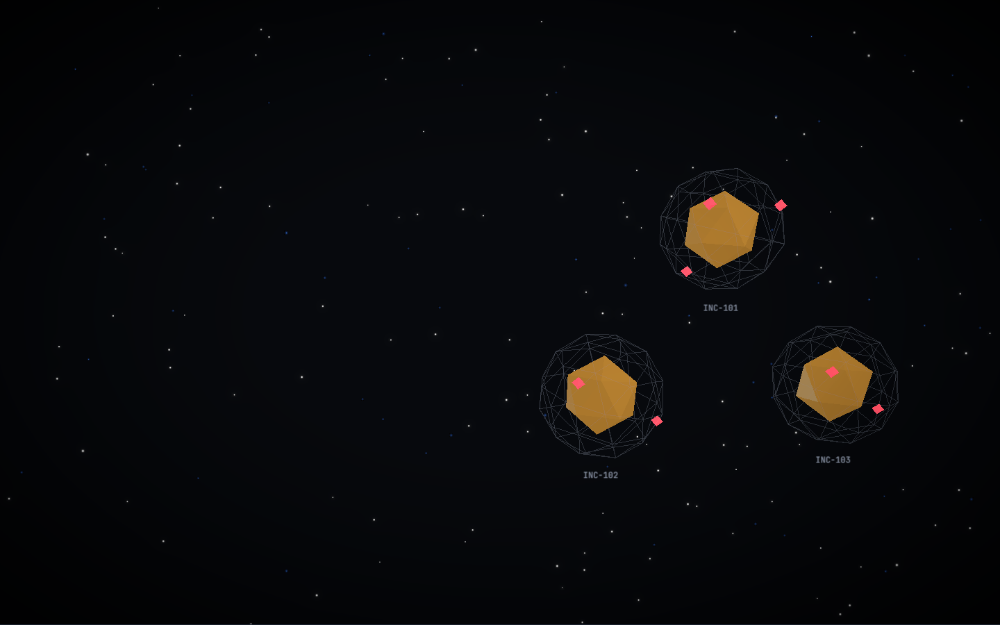

Postmortem → Regression Guard
Never
Again
Every postmortem becomes a guard your code can't forget.
Built with IBM Bob 2.0
github.com/harshgitty58/never-again-guard
Team KiraHarsh Dhavane · TY Computer Engineering, VIT Pune
Every postmortem becomes a guard your code can't forget.
Built with IBM Bob 2.0
github.com/harshgitty58/never-again-guard
"Add a test", "check similar code", "update the runbook". They get tracked as tickets and are rarely closed.
Nothing proves that test would have failed on the broken code. A test that always passes guards nothing.
The root-cause pattern is almost always copy-pasted elsewhere, and nobody goes looking.
Incomplete action items make recurrence more likely (Google SRE workbook, postmortem culture).
02$ vitest run regression.test.js ✗ FAIL failedOn: assertion expected 10 to be less than or equal to 4 exit 1 · 1.1 s
$ vitest run regression.test.js ✓ PASS all assertions hold exit 0 · 3.2 s
Same test, two throwaway git worktrees. A crash or import error on the bug commit doesn't count. Anti-cheat rejects skipped, assertion-free or self-mocking tests.
03Fails on an assertion at the bug commit and passes at the fix commit. Proven both ways.
A Semgrep rule generalized from the root cause. It must match the bug and not the fix, then it scans the whole app.
Bob fixes every variant the rule finds. The verifier reruns until none are open.
Every item is marked guarded / partial / unguarded / process-only, with file evidence. No invented code for runbooks.
Markdown: root cause, trigger, seed, action items.
Document understandingGuided by the never-again skill, pulls out the root cause, seed location and refs.
Agent mode · Skilltest + rule + guard.json per incident.
Agent modeWorktrees at both commits, anti-cheat, rule sanity checks, variant hunt.
No AIBob fixes them, then the verifier reruns until exit 0.
Agent modeOutput: reports/INC-xxx.json → static 3D dashboard on Vercel. Guardrails live in the project rules (AGENTS.md): never edit app source while guarding, and always quote the verifier's real verdict.
05
incidents GUARDED: time zone, retry storm, ₹NaN checkout
hidden variants found by the rules, then fixed and proven closed
code action items with file evidence (6/11 before); 4 honestly process-only
full verification of all incidents, also on a fresh clone
One IBM Bob task (39.26 Bobcoins) built the app, the postmortems, the verifier and all three guards, then fixed every variant.
07Run the guard on every merged postmortem PR, and block merges that reintroduce a guarded pattern.
Pull postmortems and action items from incident.io and Jira instead of markdown only.
Schedule process-only action items (runbooks, on-call changes) with watsonx Orchestrate.
Rule packs beyond JavaScript: Python, Java and Go via Semgrep.
github.com/harshgitty58/never-again-guard · Built with IBM Bob 2.0 · MIT
08